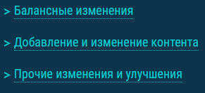

Изменения в лучшую сторону
Убрали упоминание размера обновления
В 2023 году, когда хорошее "железо" да и скорость интернета стали доступнее, я считаю, что вопрос с размером обновления отпадаетПоявилось внятное содержание статьи
Глядя на страницу 2020 года, я задаюсь вопросом "что это за ссылки и куда овни ведут?".В странице же 2022 года я вижу объяснение всем этим ссылкам, которые к этому году стали структурированным маркированным списком
Появились заголовки с выпадающим описанием
Это значительно сокращает время поиска информации по интересующему меня вопросу в данном обновлении. То есть теперь мне необязательно читать про "Празднование нового года", если мне интересны только Японские лёгкие крейсерыИсправили отображение названий кораблей
Было:Стало:
Добавили поясняющую информацию о предметах при наведении на них
Это конечно мелочь, но это придаёт смысл всем этим картинкам, иначе они бы просто выглядели лишними.Изменения в худшую сторону:
Убрали значок "файла" в левом верхнем углу с картинки
Конкретно на эту страницу этот маленький элемент никак не повлияет, но, допустим, при просмотре всей новостной ленты на сайте, я ищу свежеиспечённую статью об обновлении, а она никак не выделяется на фоне других новостей.Конечно, затем я обращусь к фильтру новостей, но "осадочек" всё же останется
Убрали выпадающую информацию в разделе "Другие изменения и улучшения"
Когда написано очень много информации, обычному пользователю бывает лень начать читать всё это, а когда всё это "нарезано" на маленькие кусочки, тут уже включается принцип "разделяй и властвуй" и вся информация беспроблемно усваивается.